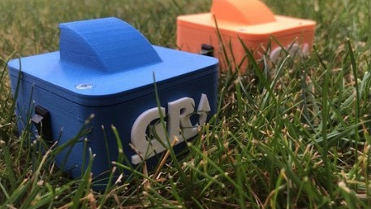

GoRider
A device to train motocross starts on your own, with an ultrasonic sensor and LEDs. I sold a few units.
- Year
- 2021–2022
- Duration
- 6 months, from idea to sellable product
- Team
- Solo
- Status
- A few units sold, then stopped when I started my studies
- CAD
- SolidWorks
- Electronics
- Arduino Pro Mini

The problem
In motocross, it is really difficult to pass an opponent, even a weaker one. That is why the start accounts for 30% of a race’s final result. Currently, there is no device that lets riders train their starts on their own, without any help and without spending more than €200 on a starting gate.
The device
That’s why I created GoRider. I managed to sell a couple, but then I started my studies and abandoned the project.
How it works
You place GoRider where you want to start. The ultrasonic sensor works as a long-range presence sensor: as soon as the rider passes in front of it, the countdown begins.
- The red LED blinks slowly for 30 seconds, to give the rider time to get ready.
- It then blinks fast, like the 15-second board being raised at a real motocross start.
- The red LED stays on, like the 5-second board.
- It waits a random time between 3 and 7 seconds. This trains the rider’s reflexes and mimics the random, human timing of the gate drop.
- The red LED turns off and the green one turns on: the gate drops and the rider can go.
Components
These are the components of the device.
Waterproofing test
Here you can see one of the first prototypes I made to test whether the box was waterproof.